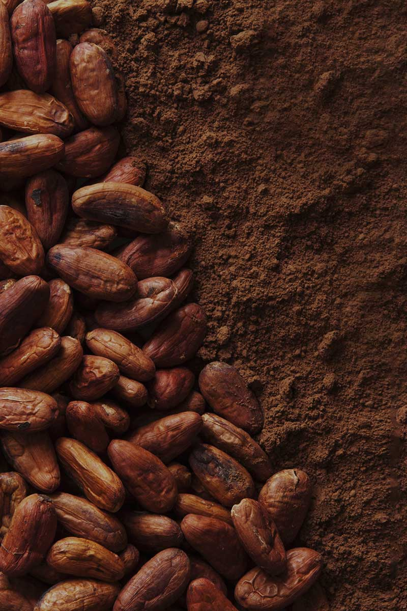
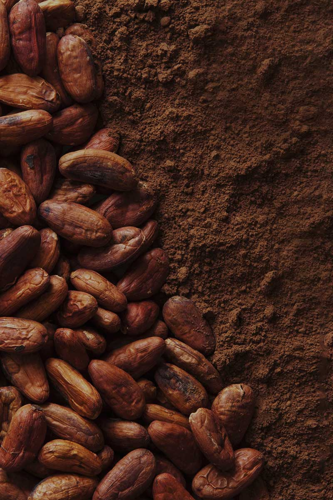

카카오껍질로 종이를? 폐기물 자원화 패키징
초콜릿을 만든 후 발생하는 부산물은 연간 600톤 정도에 이릅니다. 부산물은 사료로 사용되기도 하지만 보통 많은 양이 버려집니다. 이러한 점에 착안하여 부산물을 초콜릿 포장재 원료로 탈바꿈시키는 연구를 진행했습니다. 카카오 부산물의 활용방안을 검토하는 종이 제조 원천 기술을 보유한 국내 1위 제지사인 한솔제지와의 공동연구를 통해, 환경 친화적인 종이를 개발하게 되었습니다.
에디터 영역입니다.